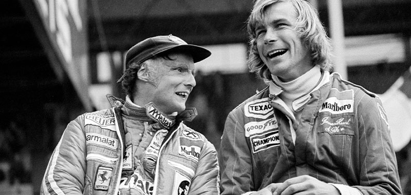
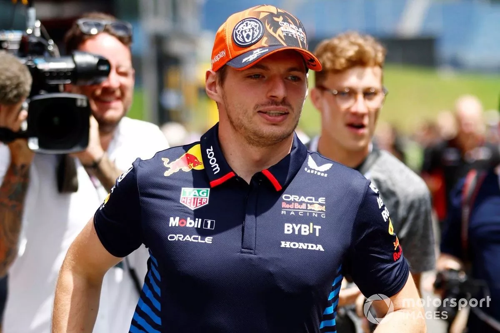
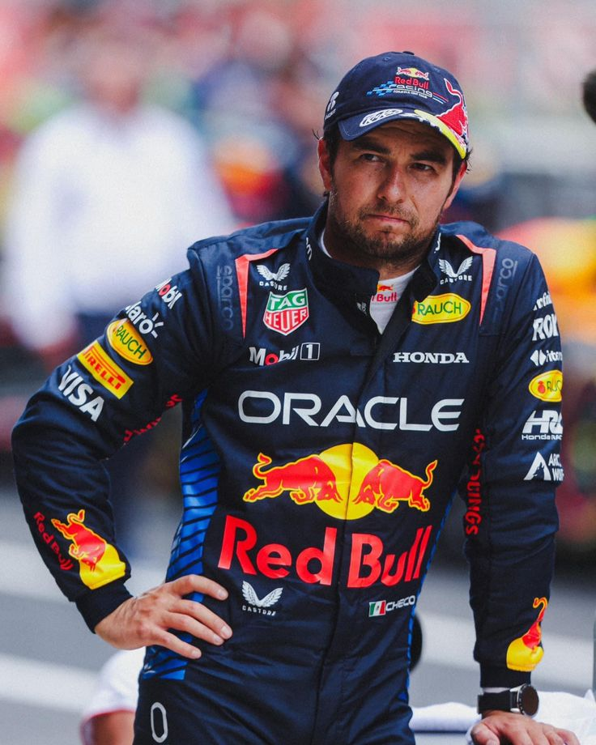

| Fecha | Circuito | Ubicación |
|---|---|---|
| 17 Mar 2024 | Circuito Internacional de Baréin | Sakhir, Baréin |
| 24 Mar 2024 | Gran Premio de Arabia Saudita | Jeddah, Arabia Saudita |
| 7 Abr 2024 | Gran Premio de Australia | Melbourne, Australia |
| 21 Abr 2024 | Gran Premio de Azerbaiyán | Baku, Azerbaiyán |
| 5 May 2024 | Gran Premio de Miami | Miami, Estados Unidos |
| 19 May 2024 | Gran Premio de Emilia-Romagna | Imola, Italia |
| 26 May 2024 | Gran Premio de Mónaco | Mónaco |
| 9 Jun 2024 | Gran Premio de España | Barcelona, España |
| 23 Jun 2024 | Gran Premio de Canadá | Montreal, Canadá |
| 30 Jun 2024 | Gran Premio de Austria | Spielberg, Austria |
| 7 Jul 2024 | Gran Premio de Gran Bretaña | Silverstone, Reino Unido |
| 21 Jul 2024 | Gran Premio de Hungría | Budapest, Hungría |
| 28 Jul 2024 | Gran Premio de Bélgica | Spa-Francorchamps, Bélgica |
| 25 Ago 2024 | Gran Premio de Países Bajos | Zandvoort, Países Bajos |
| 1 Sep 2024 | Gran Premio de Italia | Monza, Italia |
| 15 Sep 2024 | Gran Premio de Singapur | Singapur |
| 22 Sep 2024 | Gran Premio de Japón | Suzuka, Japón |
| 6 Oct 2024 | Gran Premio de Catar | Doha, Catar |
| 20 Oct 2024 | Gran Premio de Estados Unidos | Austin, Estados Unidos |
| 27 Oct 2024 | Gran Premio de México | Ciudad de México, México |
| 10 Nov 2024 | Gran Premio de Brasil | Sao Paulo, Brasil |
| 24 Nov 2024 | Gran Premio de Las Vegas | Las Vegas, Estados Unidos |
| 1 Dic 2024 | Gran Premio de Abu Dabi | Yas Marina, Abu Dabi |

F1
Conoce todo sobre la Formula 1
En la temporada 2024 de Fórmula 1 se aplicarán casi las mismas reglas que en 2023, pero hay algunos cambios detallados en los reglamentos deportivos y técnicos de la categoría.
Velocidad y Emocion
Algo aun mas Interesante es la Historia de La Formula 1
La cual se presenta En 1950 y como respuesta al Campeonato Mundial de Motociclismo iniciado en 1949, la Federación Internacional de Automovilismo (FIA) organizó el primer Campeonato Mundial de Pilotos, usando las reglas de la F1 esbozadas tras la Gran Guerra. Pero, ¿había pruebas oficiales antes de que naciera el Mundial de la disciplina? Sí, lo cierto es que las pruebas automovilísticas empezaron a tomar forma en Francia a partir de 1884. Rápidamente evolucionaron de simples carreras en caminos de un pueblo a otro a s ofisticadas pruebas de resistencia. Un cambio que dio pronto sus frutos con vehículos más rápidos y refinados pero, al disputarse en caminos abiertos, los accidentes eran más que frecuentes.
Velocidad y Emocion
Equipos y Pilotos Famosos
Escuderías icónicas como Ferrari, McLaren, Williams y Red Bull han dejado huella en la Fórmula 1.
Pilotos legendarios como Ayrton Senna, Michael Schumacher, Juan Manuel Fangio y Lewis Hamilton han marcado época con sus habilidades al volante. Rivalidades Épicas: Las rivalidades en la F1 son legendarias. Por ejemplo, la intensa competencia entre Senna y Prost en los años 80 y 90.

En otras Noticias
Velocidad y Emocion
VERSTAPPEN TERMINA CON LAS DUDAS: VOY A SEGUIR EN RED BULL EN LA F1 2025
El campeón del mundo dio la respuesta más clara hasta el momento sobre su futuro con Red Bull de cara a la próxima temporada de F1.
Max Verstappen ha insistido en que "sí" correrá para Red Bull en Fórmula 1 2025 en un intercambio con los periodistas sobre sus vagas respuestas sobre su compromiso con el equipo en el Gran Premio de Austria. La evolución se produce después de la sorprendente posibilidad que surgió en la ronda de Yeda de que Verstappen pudiera abandonar el equipo Red Bull, donde ha ganado sus tres títulos mundiales, ha logrado sus 61 victorias en grandes premios y tiene un contrato para correr hasta el final de la campaña 2028. Esa situación surgió en medio de la guerra interna de Red Bull a principios de 2024 -que siguió a la investigación sobre el comportamiento del director del equipo, Christian Horner, hacia una empleada- y cómo Verstappen respaldó firmemente al asesor deportivo de Red Bull, Helmut Marko.


Velocidad y Emocion
Un Alpine-Mercedes para convencer a Carlos Sainz
El posible cambio de motor en Enstone, baza a favor para el futuro. El español aún no ha decidido y reflexiona: “Hay que confiar poco en la gente del paddock
El mercado avanza, pero por ahora los anuncios no salpican a Sainz. Alpine confirmó la renovación de Gasly con un contrato plurianual y Aston Martin oficializó la continuidad de Stroll hasta 2026, como si hiciera falta subrayar que el hijo del jefe seguirá en el equipo. De momento, Carlos sigue aguardando a un periodo de reflexión que no llega porque en esta fase de la temporada el calendario es denso. Y, sobre todo, porque tiene tres opciones encima de la mesa que le esperarán hasta que tome una decisión: Sauber/Audi, Williams y Alpine. El fabricante de Enstone, aparentemente, ha ganado enteros como aspirante en las últimas semanas. No se debe a la incorporación de Briatore como asesor ejecutivo, un fichaje de Luca de Meo. Sí se aprecia como un punto fuerte que en 2026 pueden renunciar a fabricar su propio motor y utilizar la unidad de potencia de Mercedes que dejará libre el Aston Martin.
Noticias Importantes
Checo Perez sufre un accidente
El dia de Hoy 26 de mayo checo perez de la escuderia de Red Bull sufre un aparatoso
accidente tras chocar con Kevin Magnussen, de la escudería Haas.Esto tras la primera curva
de GP de Mónaco
y el El RB20 del mexicano terminó hecho pedazos, ¡con Haas en el impacto!
Tras lo sucedido claramente checo perez tuvo que dejar la carrera .
Tras lo sucedido La FIA declaro que no habra anciones para el piloto Kevin Magnussen
tras dictaminar que no tuvo la culpa ,aunque los medios dicen todo lo contrario
Pero dime tu que opinas?

Aca el video del choque

Velocidad y Emocion
Checo Pérez se queja de la FIA al no investigar su accidente en el GP de Mónaco
El piloto mexicano habló del choque provocado por Kevin Magnussen en el GP de Mónaco 2024.
Checo Pérez tuvo palabras sobre su accidente en el Gran Premio de Mónaco 2024 y aseguró estar sorprendido por no haber investigación de parte de la FIA. En declaraciones a los medios de comunicación casi dos horas después de su percance, el piloto mexicano de Red Bull Racing dio sus impresiones.
Dijo Checo
"Me pareció increíble que no hubiera investigación, cuando fue un accidente grave y tan grave, un accidente así se tenia que ser investigado", señaló Sergio Pérez. Checo analizó un poco la calidad del circuito callejero en Montecarlo, donde afirmó que de ser una pista más amplia, quizá no habría pasado el accidente en el GP de Mónaco. "Es muy claro, si al final en lugar de muro hay pasto, hubiera terminado solo sin haberme tocado, no había necesidad de mantenerse a fondo, no quería ceder la posición con Hulkenberg"
Calendario de Carreras de Fórmula 1 - 2024
Antes de Irte
Preguntas de Cultura General
Cuestionario sobre cultura general de la f1 Cuestionario sobre mecanica basica Paginas para ver la F1
Que tanto sabes de la Formula 1?
Responde este formulario para saber que tanto sabes de la formula 1
Cuestionario sobre cultura general de la f1 Cuestionario sobre mecanica basica Paginas para ver la F1
BatmanStream.watch
AmigosFreddy49
cl.freestreams-live1.com
Gazupro.live
Deportesonline.com
RTVE.es – Teledeportes
Formula1.lne.es
CrickFree.be
MamaHD.best
Seccion
Escribenos
Velocidad y Emocion
Un poco de Nosotros
Nuestra Pagina es un proyecto que llevamos a cabo para que conocieras no solo datos basicos de la formula 1 si no tambien datos interesantes de esta y lo que representa ser todo un piloto de la F1 en 2024 que aunque se cuente con mayor inovacion en la seguridad de esta sigue siendo todo un reto.
Por eso esperamos que te guste bastante el poder visitar este proyecto el cual se basa
en mantenerte informado a todo momento
Escribenos ,Saludos!!!